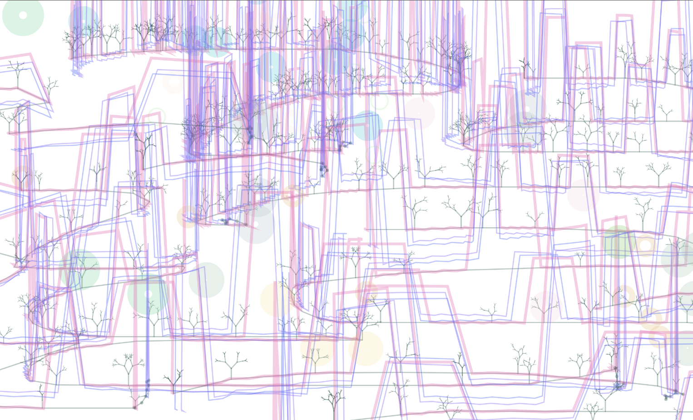

Vimeo Video
Video from this Memory
Images
These are city streets that do not exist in reality, but in which people will find their own memories.
I argue that the regularity and irregularity of thegeneration of urban architecture is similar to that of digital generation.
Firstly I simplifiedthebuilding form and then used the mouse to generate paths within the p5js software torandomly generate buildings
Video from this Memory
These are city streets that do not exist in reality, but in which people will find their own memories.